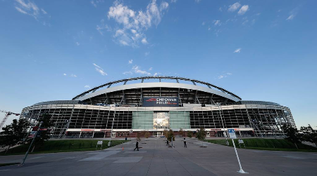
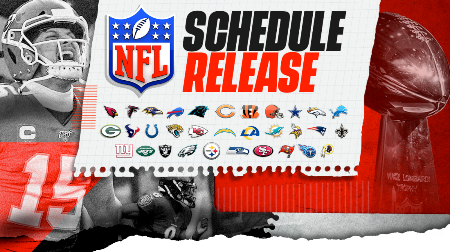
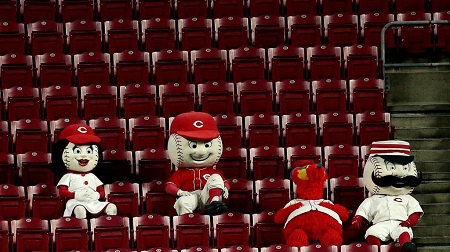
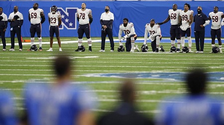

|  |  |
Estadios Vacios al inicio de la Temporarda 2020La temporada de la NFL comenzo sin publico, pero con todo la energia de los equipos, a pesar de esto la audiencia ha crecido de una manera increible |
Inicio de Temporada 2020El inicio de la temporada es algo que muchos de los fanaticos esperan anciosamente, esta promete grandes juegos con equipos renovados y bajo todos los protocoles de bioseguridad tras la pandemia del Covid-19 |
|
|
|
|  |  |
Las mascotas de los equipos sin el animo del publicoLas mascotas suelen ser quienes encienden los ánimos de los aficionados en el deporte estadounidense. Así viven la soledad de los estadios debido a la pandemia de COVID-19 |
Constantes demostraciones de lucha contra el RacismoEn todos los juegos constante por parte de los equipos, es enviar un mensaje de conciencia social ante los hechos de racismo |